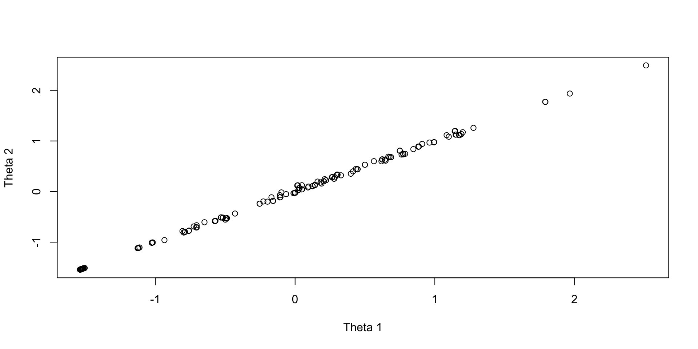

Gov NonGov
0 1 Lecture 4e
Today’s example is from a bootstrap resample of 177 undergraduate students at a large state university in the Midwest. The survey was a measure of 10 questions about their beliefs in various conspiracy theories that were being passed around the internet in the early 2010s. Additionally, gender was included in the survey. All items responses were on a 5- point Likert scale with:
Our purpose in using this instrument is to provide a context that we all may find relevant as many of these conspiracy theories are still prevalent today.
Questions:
Questions:
Latent Variables
Latent variables are built by specification:
You create latent variables by specifying which items measure which latent variables in an analysis model
The alignment provides a specification of which latent variables are measured by which items
The mathematical definition of either of these terms is simply whether or not a latent variable appears as a predictor for an item
Gov NonGov
0 1 The model for the first item is then built with only the factors measured by the item as being present:
\[ f(E\left(Y_{p1} \mid \boldsymbol{\theta}_p\right) ) = \mu_1 + \lambda_{11} \theta_{p1} \]
The model for the first item is then built with only the factors measured by the item as being present:
\[ f(E\left(Y_{p1} \mid \boldsymbol{\theta}_p\right) ) = \mu_1 + \lambda_{11} \theta_{p1} \]
Where:
The second factor is not included in the model for the item.
We could show the model with the Q-matrix entries:
\[ f(E\left(Y_{p1} \mid \boldsymbol{\theta}_p\right) ) = \mu_1 + q_{11}\left( \lambda_{11} \theta_{p1} \right) + q_{12}\left( \lambda_{12} \theta_{p2} \right) = \mu_1 + \boldsymbol{\theta}_p \text{diag}\left(\boldsymbol{q}_i \right) \boldsymbol{\lambda}_{1} \]
Where:
\(\boldsymbol{\lambda}_{1} = \left[ \begin{array}{c} \lambda_{11} \\ \lambda_{12} \end{array} \right]\) contains all possible factor loadings for item 1 (size \(2 \times 1\))
\(\boldsymbol{\theta}_p = \left[ \begin{array}{cc} \theta_{p1} & \theta_{p2} \\ \end{array} \right]\) contains the factor scores for person \(p\) (size \(1 \times 2\))
\(\text{diag}\left(\boldsymbol{q}_i \right) = \boldsymbol{q}_i \left[ \begin{array}{cc} 1 & 0 \\ 0 & 1 \end{array} \right] = \left[ \begin{array}{cc} 0 & 1 \\ \end{array} \right] \left[ \begin{array}{cc} 1 & 0 \\ 0 & 1 \end{array} \right] = \left[ \begin{array}{cc} 0 & 0 \\ 0 & 1 \end{array} \right]\) is a diagonal matrix of ones times the vector of Q-matrix entries for item 1
The matrix product then gives:
\[\boldsymbol{\theta}_p \text{diag}\left(\boldsymbol{q}_i \right) \boldsymbol{\lambda}_{1} = \left[ \begin{array}{cc} \theta_{p1} & \theta_{p2} \\ \end{array} \right]\left[ \begin{array}{cc} 0 & 0 \\ 0 & 1 \end{array} \right] \left[ \begin{array}{c} \lambda_{11} \\ \lambda_{12} \end{array} \right] = \left[ \begin{array}{cc} \theta_{p1} & \theta_{p2} \\ \end{array} \right]\left[ \begin{array}{c} 0 \\ \lambda_{12} \end{array} \right] = \lambda_{12}\theta_{p2}\]
The Q-matrix functions like a partial version of the model (predictor) matrix that we saw in linear models
Gov NonGov
item1 0 1
item2 1 0
item3 0 1
item4 0 1
item5 1 0
item6 0 1
item7 1 0
item8 1 0
item9 1 0
item10 0 1Given the Q-matrix each item has its own model using the alignment specifications
\[ \begin{array}{c} f(E\left(Y_{p1} \mid \boldsymbol{\theta}_p\right) ) = \mu_1 + \lambda_{12} \theta_{p2} \\ f(E\left(Y_{p2} \mid \boldsymbol{\theta}_p\right) ) = \mu_2 + \lambda_{21} \theta_{p1} \\ f(E\left(Y_{p3} \mid \boldsymbol{\theta}_p\right) ) = \mu_3 + \lambda_{32} \theta_{p2} \\ f(E\left(Y_{p4} \mid \boldsymbol{\theta}_p\right) ) = \mu_4 + \lambda_{42} \theta_{p2} \\ f(E\left(Y_{p5} \mid \boldsymbol{\theta}_p\right) ) = \mu_5 + \lambda_{51} \theta_{p1} \\ f(E\left(Y_{p6} \mid \boldsymbol{\theta}_p\right) ) = \mu_6 + \lambda_{62} \theta_{p2} \\ f(E\left(Y_{p7} \mid \boldsymbol{\theta}_p\right) ) = \mu_7 + \lambda_{71} \theta_{p1} \\ f(E\left(Y_{p8} \mid \boldsymbol{\theta}_p\right) ) = \mu_8 + \lambda_{81} \theta_{p1} \\ f(E\left(Y_{p9} \mid \boldsymbol{\theta}_p\right) ) = \mu_9 + \lambda_{91} \theta_{p1} \\ f(E\left(Y_{p,10} \mid \boldsymbol{\theta}_p\right) ) = \mu_{10} + \lambda_{10,2} \theta_{p2} \\ \end{array} \]
For our example, we will assume the set of traits follows a multivariate normal distribution
\[ f\left(\boldsymbol{\theta}_p \right) = \left(2 \pi \right)^{-\frac{D}{2}} \det\left(\boldsymbol{\Sigma}_\theta \right)^{-\frac{1}{2}}\exp\left[-\frac{1}{2}\left(\boldsymbol{\theta}_p - \boldsymbol{\mu}_\theta \right)^T\boldsymbol{\Sigma}_\theta^{-1}\left(\boldsymbol{\theta}_p - \boldsymbol{\mu}_\theta \right) \right] \] Where:
Alternatively, we would specify \(\boldsymbol{\theta}_p \sim N_D\left( \boldsymbol{\mu}_\theta, \boldsymbol{\Sigma}_\theta \right)\); but, we cannot always estimate \(\boldsymbol{\mu}_\theta\) and \(\boldsymbol{\Sigma}_\theta\)
Psychometric models require two types of identification to be valid:
Bayesian priors can help to make models with fewer items than these criteria suggest estimable
Psychometric models require two types of identification to be valid:
Bayesian priors can let you believe you can estimate more parameters than the non-Bayesian standards suggest
Like empirical identification, these estimates are often unstable and are not recommended
Most common:
Today, we will use standardized factors
For each item, we will use a graded- (ordinal logit) response modelwhere:
\[P\left(Y_{ic } = c \mid \theta_p \right) = \left\{ \begin{array}{lr} 1-P\left(Y_{i1} \gt 1 \mid \theta_p \right) & \text{if } c=1 \\ P\left(Y_{i{c-1}} \gt c-1 \mid \theta_p \right) - P\left(Y_{i{c}} \gt c \mid \theta_p \right) & \text{if } 1<c<C_i \\ P\left(Y_{i{C_i -1} } \gt C_i-1 \mid \theta_p \right) - 0 & \text{if } c=C_i \\ \end{array} \right.\]
Where:
\[ P\left(Y_{i{c}} > c \mid \theta \right) = \frac{\exp(\mu_{ic}+\lambda_i\theta_p)}{1+\exp(\mu_{ic}+\lambda_i\theta_p)}\]
With:
Building the Multidimensional Model in Stan
As Stan uses thresholds instead of intercepts, our model then becomes:
\[P\left(Y_{ic } = c \mid \theta_p \right) = \left\{ \begin{array}{lr} 1-P\left(Y_{i1} \gt 1 \mid \theta_p \right) & \text{if } c=1 \\ P\left(Y_{i{c-1}} \gt c-1 \mid \theta_p \right) - P\left(Y_{i{c}} \gt c \mid \theta_p \right) & \text{if } 1<c<C_i \\ P\left(Y_{i{C_i -1} } \gt C_i-1 \mid \theta_p \right) & \text{if } c=C_i \\ \end{array} \right.\]
Where:
\[ P\left(Y_{i{c}} > c \mid \theta \right) = \frac{\exp(-\tau_{ic}+\lambda_i\theta_p)}{1+\exp(-\tau_{ic}+\lambda_i\theta_p)}\]
With:
We can convert thresholds to intercepts by multiplying by negative one: \(\mu_c = -\tau_c\)
model {
lambda ~ multi_normal(meanLambda, covLambda);
thetaCorrL ~ lkj_corr_cholesky(1.0);
theta ~ multi_normal_cholesky(meanTheta, thetaCorrL);
for (item in 1:nItems){
thr[item] ~ multi_normal(meanThr[item], covThr[item]);
Y[item] ~ ordered_logistic(thetaMatrix*lambdaMatrix[item,1:nFactors]', thr[item]);
}
}Notes:
thetaMatrix is matrix of latent variables for each person \(\boldsymbol{\Theta}\) (size \(N \times D\); \(N\) is number of people, \(D\) is number of dimensions)lambdaMatrix is, for each item, a matrix of factor loading/discrimination parameters along with zeros by Q-matrix (size \(I \times D\); \(I\) is number of items)
lambda is a vector of estimated factor loadings (we use a different block to put these into lambdaMatrix)
model {
lambda ~ multi_normal(meanLambda, covLambda);
thetaCorrL ~ lkj_corr_cholesky(1.0);
theta ~ multi_normal_cholesky(meanTheta, thetaCorrL);
for (item in 1:nItems){
thr[item] ~ multi_normal(meanThr[item], covThr[item]);
Y[item] ~ ordered_logistic(thetaMatrix*lambdaMatrix[item,1:nFactors]', thr[item]);
}
}Notes:
theta is an array of latent variables (we use a different block to put these into thetaMatrix)theta follows a multivariate normal distribution as a prior where:
theta to zero (the mean for each factor is set to zero)theta to one (the variance for each factor is set to one)lkj_corr_cholesky and multi_normal_choleskyFrom Stan’s Functions Reference, for a correlation matrix \(\textbf{R}_\theta\)
Correlation Matrix Properties:
LKJ Prior, with hyperparameter \(\eta\), is proportional to the determinant of the correlation matrix
\[\text{LKJ}\left(\textbf{R}_\theta \mid \eta \right) \propto \det\left(\textbf{R}_\theta \right)^{(\eta-1)} \] Where:
For this example, we set \(\eta=1\), noting a uniform prior over all correlation matrices
The functions we are using do not use the correlation matrix directly
\[\textbf{R}_\theta = \textbf{L}_\theta \textbf{L}_\theta^T\]
\[-\frac{1}{2}\left(\boldsymbol{\theta}_p - \boldsymbol{\mu}_\theta \right)^T\textbf{R}_\theta^{-1}\left(\boldsymbol{\theta}_p - \boldsymbol{\mu}_\theta \right) = -\frac{1}{2}\left(\boldsymbol{\theta}_p - \boldsymbol{\mu}_\theta \right)^T\left(\textbf{L}_\theta \textbf{L}_\theta^T\right)^{-1}\left(\boldsymbol{\theta}_p - \boldsymbol{\mu}_\theta \right) \]
\[ -\frac{1}{2}\left(\boldsymbol{\theta}_p - \boldsymbol{\mu}_\theta \right)^T\textbf{L}_\theta^{-T} \textbf{L}_\theta^{-1}\left(\boldsymbol{\theta}_p - \boldsymbol{\mu}_\theta \right)\] Then, we solve by back substitution: \(\left(\boldsymbol{\theta}_p - \boldsymbol{\mu}_\theta \right)^T\textbf{L}_\theta^{-T}\)
Most algorithms using MVN distributions use some variant of this process (perhaps with a different factorization method such as QR)
parameters {
array[nObs] vector[nFactors] theta; // the latent variables (one for each person)
array[nItems] ordered[maxCategory-1] thr; // the item thresholds (one for each item category minus one)
vector[nLoadings] lambda; // the factor loadings/item discriminations (one for each item)
cholesky_factor_corr[nFactors] thetaCorrL;
}Notes:
theta is an array (for the MVN prior)thr is the same as the unidimensional modellambda is the vector of all factor loadings to be estimated (needs nLoadings)thetaCorrL is of type cholesky_factor_corr, a built in type that identifies this as the lower diagonal of a Cholesky-factorized correlation matrixWe need a couple other blocks to link our parameters to the model
transformed data{
int<lower=0> nLoadings = 0; // number of loadings in model
for (factor in 1:nFactors){
nLoadings = nLoadings + sum(Qmatrix[1:nItems, factor]);
}
array[nLoadings, 2] int loadingLocation; // the row/column positions of each loading
int loadingNum=1;
for (item in 1:nItems){
for (factor in 1:nFactors){
if (Qmatrix[item, factor] == 1){
loadingLocation[loadingNum, 1] = item;
loadingLocation[loadingNum, 2] = factor;
loadingNum = loadingNum + 1;
}
}
}
}Notes:
transformed data {} block runs prior to the Markov chain
nLoadings
loadingsMatrix used in the model {} block
transformed parameters{
matrix[nItems, nFactors] lambdaMatrix = rep_matrix(0.0, nItems, nFactors);
matrix[nObs, nFactors] thetaMatrix;
// build matrix for lambdas to multiply theta matrix
for (loading in 1:nLoadings){
lambdaMatrix[loadingLocation[loading,1], loadingLocation[loading,2]] = lambda[loading];
}
for (factor in 1:nFactors){
thetaMatrix[,factor] = to_vector(theta[,factor]);
}
}Notes:
transformed parameters {} block runs prior to each iteration of the Markov chain
thetaMatrix (converting theta from an array to a matrix)lambdaMatrix (puts the loadings and zeros from the Q-matrix into correct position)
lambdaMatrix initializes at zero (so we just have to add the loadings in the correct position)data {
// data specifications =============================================================
int<lower=0> nObs; // number of observations
int<lower=0> nItems; // number of items
int<lower=0> maxCategory; // number of categories for each item
// input data =============================================================
array[nItems, nObs] int<lower=1, upper=5> Y; // item responses in an array
// loading specifications =============================================================
int<lower=1> nFactors; // number of loadings in the model
array[nItems, nFactors] int<lower=0, upper=1> Qmatrix;
// prior specifications =============================================================
array[nItems] vector[maxCategory-1] meanThr; // prior mean vector for intercept parameters
array[nItems] matrix[maxCategory-1, maxCategory-1] covThr; // prior covariance matrix for intercept parameters
vector[nItems] meanLambda; // prior mean vector for discrimination parameters
matrix[nItems, nItems] covLambda; // prior covariance matrix for discrimination parameters
vector[nFactors] meanTheta;
}Notes:
meanTheta: Factor means (hyperparameters) are added (but we will set these to zero)nFactors: Number of latent variables (needed for Q-matrix)Qmatrix: Q-matrix for modelNotes:
muthetaCorr by multiplying Cholesky-factorized lower triangle with upper triangle
thetaCorr when looking at model outputStan Analyses
We run stan the same way we have previously:
Notes:
[1] 1.080608# A tibble: 54 × 10
varia…¹ mean median sd mad q5 q95 rhat ess_b…² ess_t…³
<chr> <dbl> <dbl> <dbl> <dbl> <dbl> <dbl> <dbl> <dbl> <dbl>
1 lambda… 2.00 1.99 0.266 0.266 1.59 2.46 1.00 2608. 5005.
2 lambda… 2.84 2.82 0.382 0.378 2.25 3.50 1.00 2302. 4728.
3 lambda… 2.40 2.38 0.337 0.334 1.88 2.98 1.00 3336. 5197.
4 lambda… 2.93 2.91 0.397 0.388 2.31 3.62 1.00 3215. 5114.
5 lambda… 4.32 4.28 0.587 0.571 3.42 5.34 1.00 2727. 4328.
6 lambda… 4.21 4.19 0.571 0.572 3.33 5.20 1.00 2185. 4053.
7 lambda… 2.86 2.84 0.412 0.406 2.22 3.57 1.00 2515. 5597.
8 lambda… 4.13 4.09 0.561 0.556 3.28 5.11 1.00 2250. 4791.
9 lambda… 2.90 2.88 0.426 0.417 2.24 3.66 1.00 3152. 4106.
10 lambda… 2.44 2.42 0.427 0.414 1.78 3.18 1.00 4581. 4975.
11 mu[1,1] 1.87 1.86 0.289 0.293 1.41 2.36 1.00 1431. 3230.
12 mu[2,1] 0.797 0.793 0.310 0.312 0.296 1.31 1.00 893. 1900.
13 mu[3,1] 0.0833 0.0835 0.265 0.259 -0.356 0.516 1.00 765. 1468.
14 mu[4,1] 0.983 0.977 0.329 0.327 0.454 1.53 1.00 860. 1584.
15 mu[5,1] 1.29 1.28 0.434 0.425 0.601 2.03 1.01 637. 1407.
16 mu[6,1] 0.945 0.934 0.426 0.414 0.283 1.65 1.01 589. 1248.
17 mu[7,1] -0.124 -0.128 0.302 0.299 -0.615 0.376 1.00 717. 1116.
18 mu[8,1] 0.670 0.659 0.407 0.401 0.0164 1.36 1.01 576. 1197.
19 mu[9,1] -0.0781 -0.0805 0.309 0.305 -0.586 0.430 1.00 751. 1420.
20 mu[10,… -1.37 -1.36 0.322 0.318 -1.92 -0.871 1.00 1074. 2160.
21 mu[1,2] -0.222 -0.224 0.238 0.233 -0.617 0.167 1.00 992. 2111.
22 mu[2,2] -1.54 -1.53 0.325 0.321 -2.09 -1.01 1.00 944. 1969.
23 mu[3,2] -1.12 -1.12 0.278 0.280 -1.58 -0.666 1.00 819. 1839.
24 mu[4,2] -1.16 -1.15 0.325 0.320 -1.70 -0.636 1.01 729. 1645.
25 mu[5,2] -1.97 -1.96 0.452 0.448 -2.74 -1.24 1.00 735. 1352.
26 mu[6,2] -2.02 -2.00 0.443 0.448 -2.75 -1.31 1.01 742. 1545.
27 mu[7,2] -1.96 -1.95 0.349 0.349 -2.56 -1.41 1.00 1040. 1597.
28 mu[8,2] -1.86 -1.84 0.429 0.431 -2.58 -1.16 1.01 691. 1230.
29 mu[9,2] -1.96 -1.95 0.351 0.346 -2.56 -1.41 1.00 1038. 1978.
30 mu[10,… -2.61 -2.60 0.380 0.378 -3.29 -2.02 1.00 1471. 3186.
31 mu[1,3] -2.05 -2.04 0.284 0.279 -2.52 -1.59 1.00 1362. 2534.
32 mu[2,3] -3.40 -3.39 0.416 0.414 -4.10 -2.74 1.00 1609. 3636.
33 mu[3,3] -3.69 -3.67 0.424 0.418 -4.42 -3.04 1.00 1918. 5037.
34 mu[4,3] -3.87 -3.85 0.472 0.458 -4.70 -3.12 1.00 1659. 3528.
35 mu[5,3] -4.57 -4.55 0.607 0.597 -5.61 -3.63 1.00 1247. 3261.
36 mu[6,3] -5.64 -5.62 0.684 0.684 -6.78 -4.55 1.00 2317. 4484.
37 mu[7,3] -4.17 -4.14 0.505 0.506 -5.05 -3.39 1.00 2458. 4976.
38 mu[8,3] -6.44 -6.40 0.784 0.779 -7.79 -5.22 1.00 3305. 5078.
39 mu[9,3] -3.26 -3.24 0.430 0.430 -3.99 -2.59 1.00 1380. 3264.
40 mu[10,… -3.78 -3.76 0.468 0.462 -4.57 -3.05 1.00 2149. 2306.
41 mu[1,4] -3.99 -3.97 0.470 0.454 -4.80 -3.25 1.00 3417. 5173.
42 mu[2,4] -4.93 -4.90 0.576 0.571 -5.91 -4.04 1.00 3034. 5066.
43 mu[3,4] -4.79 -4.76 0.559 0.566 -5.74 -3.91 1.00 3136. 3794.
44 mu[4,4] -4.78 -4.76 0.565 0.556 -5.78 -3.90 1.00 2148. 5506.
45 mu[5,4] -6.83 -6.78 0.844 0.829 -8.28 -5.51 1.00 2528. 2677.
46 mu[6,4] -7.96 -7.92 0.987 0.979 -9.62 -6.40 1.00 4736. 6305.
47 mu[7,4] -5.72 -5.68 0.701 0.693 -6.97 -4.65 1.00 4510. 5613.
48 mu[8,4] -8.49 -8.41 1.11 1.13 -10.4 -6.81 1.00 5309. 5788.
49 mu[9,4] -4.96 -4.93 0.593 0.599 -5.97 -4.06 1.00 2448. 5618.
50 mu[10,… -4.03 -4.01 0.495 0.491 -4.88 -3.26 1.00 2410. 2494.
51 thetaC… 1 1 0 0 1 1 NA NA NA
52 thetaC… 0.993 0.994 0.00632 0.00496 0.980 0.999 1.08 44.8 94.9
53 thetaC… 0.993 0.994 0.00632 0.00496 0.980 0.999 1.08 44.8 94.9
54 thetaC… 1 1 0 0 1 1 NA NA NA
# … with abbreviated variable names ¹variable, ²ess_bulk, ³ess_tailNote:
Plots of draws for person 1:
theta[1,1] theta[1,2]
theta[1,1] 1.0000000 0.8629062
theta[1,2] 0.8629062 1.0000000Plots of draws for person 1:
Wrapping Up
Stan makes multidimensional latent variable models fairly easy to implement
But…